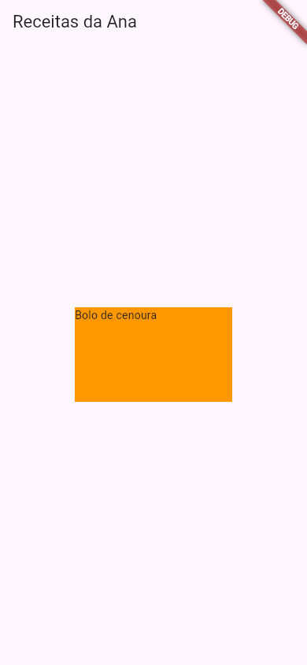
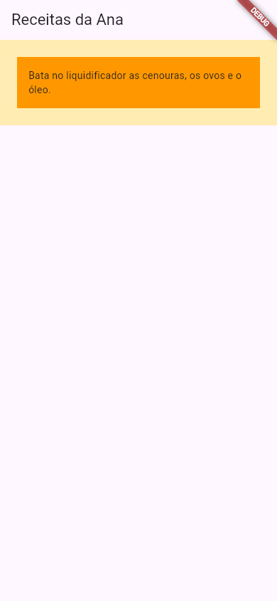
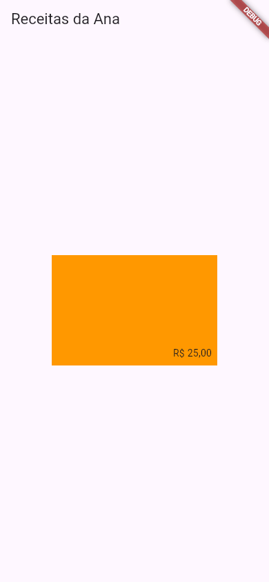
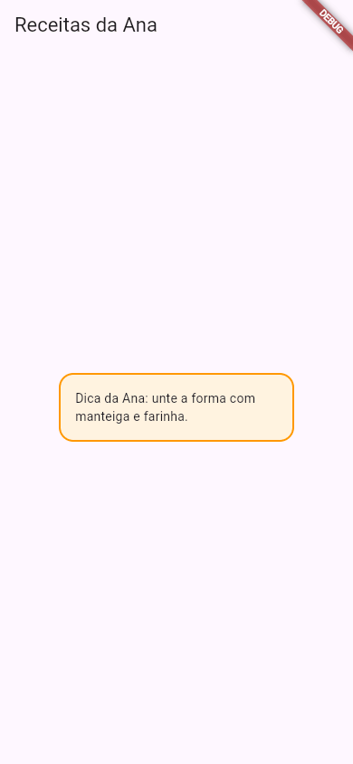
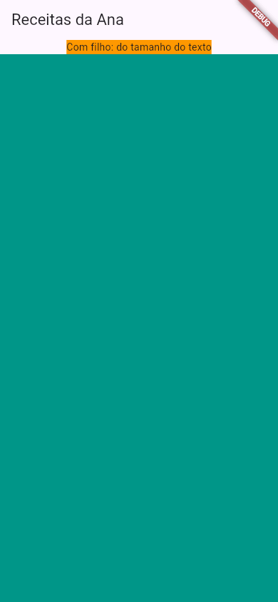

Flutter Container
Fundo colorido atrás de um texto, um espaço em volta de uma foto, um cartão com cantos arredondados: quase sempre que a Ana quer "uma caixa" na tela, o widget é o Container. Ele junta numa peça só várias coisas que o Flutter também oferece separadas: cor, tamanho, espaço por dentro, espaço por fora, alinhamento e decoração. É o canivete suíço do layout.
- A pintar uma caixa com
colore dar a elawidtheheight. - O espaço por dentro (
padding) e por fora (margin). - A posicionar o filho com
alignment. - Cantos arredondados e borda com
decoration: BoxDecoration(...). - Como o
Containerdecide o próprio tamanho, com e sem filho. - Quando trocar o
Containerpor um widget mais simples. - O erro real de usar
coloredecorationjuntos.
Todos os apps desta aula foram compilados com o Flutter 3.47.7 do laboratório e fotografados numa tela do tamanho de um celular.
A ideia: a caixa de presente
Uma caixa de presente tem um tamanho, uma cor de papel, às vezes uma fita (a borda) e cantos arredondados. Dentro dela vai o presente, com um pouco de papel de seda em volta para não bater nas paredes (o padding). E, na mesa, você não cola uma caixa na outra: deixa um espaço entre elas (a margin).
O Container é essa caixa, e o child é o presente.
1. Cor e tamanho
import 'package:flutter/material.dart';
void main() {
runApp(const MeuApp());
}
class MeuApp extends StatelessWidget {
const MeuApp({super.key});
@override
Widget build(BuildContext context) {
return MaterialApp(
home: Scaffold(
appBar: AppBar(title: const Text('Receitas da Ana')),
body: Center(
child: Container(
width: 200,
height: 120,
color: Colors.orange,
child: const Text('Bolo de cenoura'),
),
),
),
);
}
}
- Container( ... )
- A caixa. Todos os parâmetros são opcionais.
- width: 200, height: 120
- Largura e altura, em pontos lógicos.
- color: Colors.orange
- A cor do fundo da caixa.
- child: const Text(...)
- O "presente": o widget de dentro. Repare onde ele ficou na foto.

Repare: o texto não ficou no meio da caixa. Um Container com tamanho põe o filho no canto de cima, à esquerda, a não ser que você diga outra coisa (seção 3). E o Center de fora centralizou a caixa inteira na tela, não o texto dentro dela.
2. Espaço por dentro e por fora: padding e margin
body: Container(
color: Colors.amber.shade100,
child: Container(
margin: const EdgeInsets.all(24),
padding: const EdgeInsets.all(16),
color: Colors.orange,
child: const Text('Bata no liquidificador as cenouras, os ovos e o óleo.'),
),
),
- padding: const EdgeInsets.all(16)
- "Enchimento": 16 pontos de espaço por dentro da caixa, entre a borda e o filho, nos quatro lados. A cor da caixa pinta esse espaço.
- margin: const EdgeInsets.all(24)
- "Margem": 24 pontos de espaço por fora, entre a caixa e o que está em volta. A margem é transparente: aparece a cor de quem está atrás (aqui, o
Containerâmbar-claro de fora, colocado só para você ver a margem). - EdgeInsets
- "Recuos das bordas": o tipo que descreve os quatro lados.
EdgeInsets.all(16)= os quatro iguais. Há tambémEdgeInsets.symmetric(horizontal: 16, vertical: 8)eEdgeInsets.only(left: 16); a aula Padding e Margem mostra todos.

3. Onde o filho fica: alignment
body: Center(
child: Container(
width: 240,
height: 160,
color: Colors.orange,
alignment: Alignment.bottomRight,
padding: const EdgeInsets.all(8),
child: const Text('R\$ 25,00'),
),
),
- alignment: Alignment.bottomRight
- Põe o filho no canto de baixo, à direita, da caixa. Os outros:
Alignment.center,.topLeft,.topCenter,.centerLeft... (aula Center e Align).

alignment: Alignment.bottomRight, com um padding de 8.Missão: centralize o preço dentro da caixa (Alignment.center) e pinte a caixa de Colors.teal.
import 'package:flutter/material.dart';
void main() {
runApp(const MeuApp());
}
class MeuApp extends StatelessWidget {
const MeuApp({super.key});
@override
Widget build(BuildContext context) {
return MaterialApp(
home: Scaffold(
appBar: AppBar(title: const Text('Lojinha da Ana')),
body: Center(
child: Container(
width: 240,
height: 160,
color: Colors.orange,
alignment: Alignment.bottomRight,
child: const Text('R\$ 25,00'),
),
),
),
);
}
}
import 'package:flutter/material.dart';
void main() {
runApp(const MeuApp());
}
class MeuApp extends StatelessWidget {
const MeuApp({super.key});
@override
Widget build(BuildContext context) {
return MaterialApp(
home: Scaffold(
appBar: AppBar(title: const Text('Lojinha da Ana')),
body: Center(
child: Container(
width: 240,
height: 160,
color: Colors.teal,
alignment: Alignment.center,
child: const Text('R\$ 25,00'),
),
),
),
);
}
}
4. Cantos arredondados e borda: decoration
Para cantos arredondados, borda ou sombra, o color não basta: entra a decoration, com um BoxDecoration. E a cor passa a morar dentro dele:
body: Center(
child: Container(
width: 260,
padding: const EdgeInsets.all(16),
decoration: BoxDecoration(
color: Colors.orange.shade50,
borderRadius: BorderRadius.circular(16),
border: Border.all(color: Colors.orange, width: 2),
),
child: const Text('Dica da Ana: unte a forma com manteiga e farinha.'),
),
),
- decoration: BoxDecoration(...)
- A "decoração" da caixa: cor, cantos, borda, sombra, degradê, imagem de fundo.
- color: (dentro do BoxDecoration)
- A cor do fundo. Com
decoration, a cor vai aqui, e não nocolordoContainer(veja Quando dá errado). - borderRadius: BorderRadius.circular(16)
- Cantos arredondados, raio 16.
- border: Border.all(color: Colors.orange, width: 2)
- Uma borda laranja de 2 pontos nos quatro lados.
- width: 260, sem height
- Sem altura, a caixa fica com a altura do filho mais o
padding.

BoxDecoration: cor, cantos e borda.O BoxDecoration tem muito mais (sombras, degradês, formas): a aula Cores, Bordas e Sombras é toda dele.
5. Que tamanho tem um Container?
Essa é a pergunta que mais confunde no começo. A regra, simplificada:
- Se você deu
width/height, ele tenta ter esse tamanho (o pai ainda pode limitar: aula Como o Flutter Calcula Tamanhos). - Se não deu e ele tem filho, ele fica do tamanho do filho (mais o
padding). - Se não deu e ele não tem filho, ele fica o maior possível: ocupa todo o espaço que o pai deixar.
body: Column(
children: [
Container(
color: Colors.orange,
child: const Text('Com filho: do tamanho do texto'),
),
Expanded(
child: Container(color: Colors.teal),
),
],
),
- Container com filho, sem tamanho
- Fica do tamanho do texto.
- Container sem filho, sem tamanho
- Ocupa tudo o que pode. O
Expandedem volta dá a ele "todo o resto da coluna" (aula Expanded e Flexible).

Formas diferentes: Container ou um widget mais simples?
O Container é prático, mas, por dentro, ele só junta outros widgets mais simples. Quando você usa só uma das coisas dele, o widget específico deixa o código mais claro (num Container só com tamanho e sem cor, o analisador do Flutter até sugere trocar por SizedBox):
| Se você só quer... | Use | Em vez de |
|---|---|---|
| Espaço em volta | Padding(padding: EdgeInsets.all(16), child: ...) | Container(padding: ...) |
| Um tamanho fixo, ou um espaço vazio | SizedBox(width: 100, height: 50) | Container(width: ..., height: ...) |
| Uma cor de fundo | ColoredBox(color: Colors.orange, child: ...) | Container(color: ...) |
| Centralizar / alinhar | Center(...) / Align(...) | Container(alignment: ...) |
| Cor e espaço e cantos juntos | Container | Três widgets aninhados |
Os widgets simples têm aulas próprias: Padding e Margem, SizedBox e Spacer, Center e Align.
Quando dá errado
color e decoration juntos
A Ana já tinha uma caixa laranja e quis arredondar os cantos. Acrescentou a decoration e deixou o color onde estava:
body: Center(
child: Container(
width: 200,
height: 120,
color: Colors.orange,
decoration: BoxDecoration(
borderRadius: BorderRadius.circular(16),
),
child: const Text('Bolo de cenoura'),
),
),
O código compila, mas, com o app rodando, a tela inteira fica vermelha de erro (a tela vermelha que você conheceu em Seu Primeiro App), e o console mostra:
══╡ EXCEPTION CAUGHT BY WIDGETS LIBRARY ╞═══════════════════════════════════════════════════════════ The following assertion was thrown building MeuApp(dirty): Assertion failed: file:///home/ana/flutter/packages/flutter/lib/src/widgets/container.dart:277:10 color == null || decoration == null "Cannot provide both a color and a decoration.\nThe color argument is just a shorthand for \"decoration: BoxDecoration(color: color)\".\nTo use both a color and other decoration properties, set the color in the BoxDecoration instead." The relevant error-causing widget was: MeuApp MeuApp:file:///home/ana/app/lib/main.dart:4:16 …
- Assertion failed:
- "A verificação falhou". Uma assertion é uma conferência que o próprio Flutter faz no modo debug; quando ela falha, aparece a tela vermelha.
- container.dart:277:10 / color == null || decoration == null
- Onde fica a conferência (no código do
Container, dentro do Flutter) e o que ela exige: "ou ocoloré nulo, ou adecorationé nula". Os dois juntos, não. - Cannot provide both a color and a decoration.
- "Não dá para informar uma cor e uma decoração ao mesmo tempo."
- The color argument is just a shorthand for "decoration: BoxDecoration(color: color)".
- A explicação: o
colordoContaineré só um atalho para uma decoração com cor. Com os dois, oContainerteria duas decorações. - To use both a color and other decoration properties, set the color in the BoxDecoration instead.
- O conserto, já escrito pelo Flutter: ponha a cor dentro do
BoxDecoration. - The relevant error-causing widget was: MeuApp ... main.dart:4:16
- O widget que estava sendo construído quando o erro aconteceu: o
MeuApp, cujobuildcria oContainer.
Como consertar: tire o color do Container e escreva decoration: BoxDecoration(color: Colors.orange, borderRadius: BorderRadius.circular(16)), como na seção 4.
Não é erro, mas confunde: com width e height, o filho vai para o canto de cima, à esquerda (foto da seção 1), e um Center em volta do Container centraliza a caixa, não o texto. Como consertar: alignment: Alignment.center no Container, ou um Center dentro dele, como child.
Referência rápida
| Parâmetro | O que faz | Exemplo |
|---|---|---|
child | O widget de dentro | child: Text('Oi') |
width / height | Tamanho | width: 200 |
color | Cor de fundo (sem decoration) | color: Colors.orange |
padding | Espaço por dentro | padding: EdgeInsets.all(16) |
margin | Espaço por fora | margin: EdgeInsets.all(8) |
alignment | Posição do filho dentro da caixa | alignment: Alignment.center |
decoration | Cor, cantos, borda, sombra | BoxDecoration(color: ..., borderRadius: BorderRadius.circular(12)) |
constraints | Limites de tamanho (mínimo/máximo) | BoxConstraints(maxWidth: 300) |
Exercícios
1. Por dentro
Qual parâmetro dá espaço por dentro da caixa?
2. Por fora
E por fora?
3. Cantos
Complete para arredondar os cantos com raio 12:
4. Um Container(color: Colors.red), sem filho e sem tamanho, direto no body. Como fica?
5. Com decoration: BoxDecoration(...), onde vai a cor de fundo?
Missão final: a etiqueta de promoção
Missão: transforme a caixa numa etiqueta: padding de EdgeInsets.all(12), cantos com raio 20 e fundo Colors.red. Para os cantos você vai precisar de um BoxDecoration, então tire o color do Container e leve a cor para dentro da decoração.
import 'package:flutter/material.dart';
void main() {
runApp(const LojinhaApp());
}
class LojinhaApp extends StatelessWidget {
const LojinhaApp({super.key});
@override
Widget build(BuildContext context) {
return MaterialApp(
home: Scaffold(
appBar: AppBar(title: const Text('Lojinha da Ana')),
body: Center(
child: Container(
color: Colors.orange,
child: const Text(
'30% OFF',
style: TextStyle(color: Colors.white, fontWeight: FontWeight.bold),
),
),
),
),
);
}
}
import 'package:flutter/material.dart';
void main() {
runApp(const LojinhaApp());
}
class LojinhaApp extends StatelessWidget {
const LojinhaApp({super.key});
@override
Widget build(BuildContext context) {
return MaterialApp(
home: Scaffold(
appBar: AppBar(title: const Text('Lojinha da Ana')),
body: Center(
child: Container(
padding: const EdgeInsets.all(12),
decoration: BoxDecoration(
color: Colors.red,
borderRadius: BorderRadius.circular(20),
),
child: const Text(
'30% OFF',
style: TextStyle(color: Colors.white, fontWeight: FontWeight.bold),
),
),
),
),
);
}
}
Resumo
- O
Containeré uma caixa comchild, e junta numa peça:color,width/height,padding(por dentro),margin(por fora),alignmentedecoration. - Cantos, borda e sombra vão no
decoration: BoxDecoration(...); aí a cor vai dentro dele, nunca nos dois lugares. - Sem tamanho: com filho, fica do tamanho do filho; sem filho, ocupa todo o espaço que puder.
- Se só precisa de uma coisa, prefira o widget simples:
Padding,SizedBox,ColoredBox,Center.